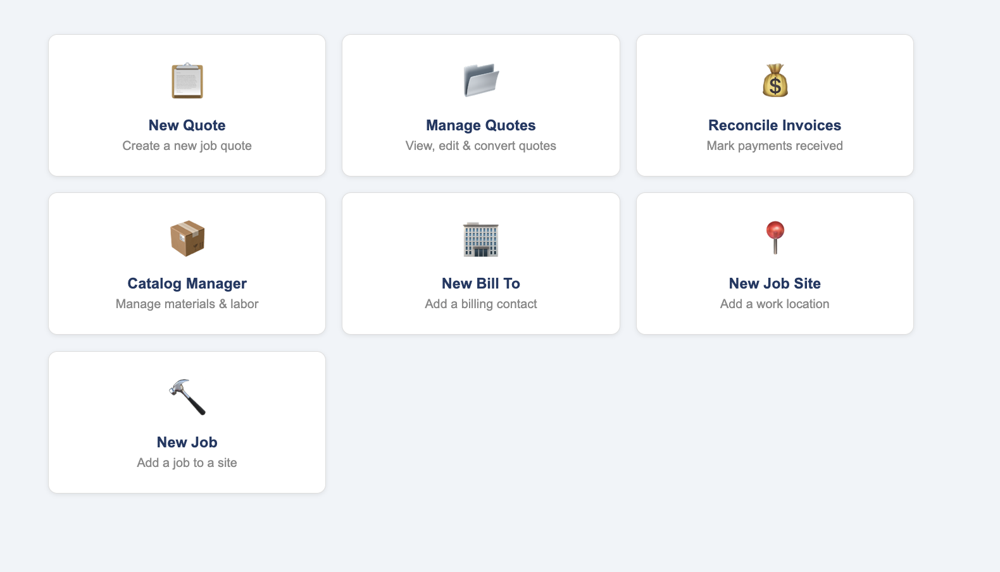
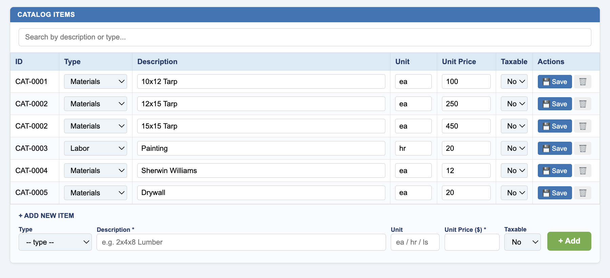
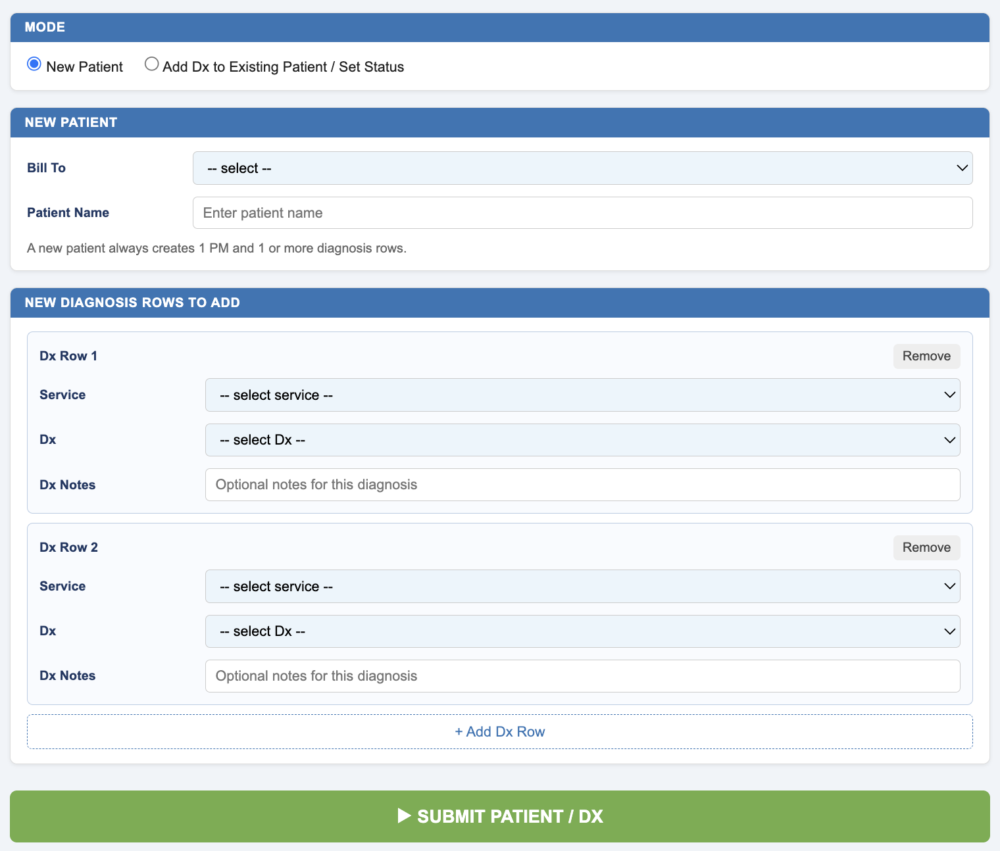
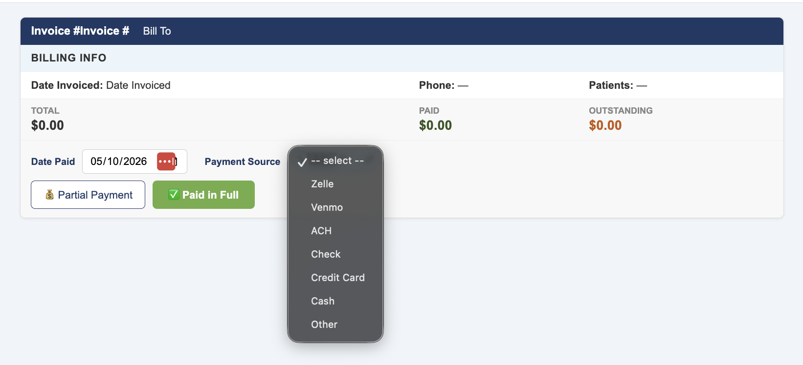

1
Built inside Google Sheets
Lightweight, familiar, and fast to adopt for businesses already living in spreadsheets.
InvoiceAndCollect is currently in beta: a cost-effective monthly subscription Google Sheets add-on suite, planned for Google Marketplace, with possible standalone product expansion later.
Keep the familiarity of Google Sheets while adding workflow logic for quoting, billing, collection, and reconciliation.
Lightweight, familiar, and fast to adopt for businesses already living in spreadsheets.
Contractors, therapists, consultants, and service businesses should not be forced into the same billing workflow.
List invoices, track partial and full payments, and simplify reconciliation for finance and accounting teams.
InvoiceAndCollect was built with specific users and practice preferences in mind.

Easy-to-use operational dashboards designed to help users get where they need quickly without unnecessary complexity.

Quickly add, update, or adjust products and services — from contractor materials to therapy sessions and consulting services.

Operational workflows adapt based on the selected vertical so users only see the information and tools relevant to their process.

Track invoices, reconcile partial and full payments, and simplify operational reporting for finance and accounting teams.